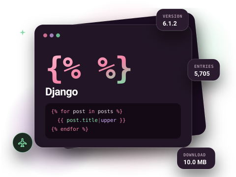
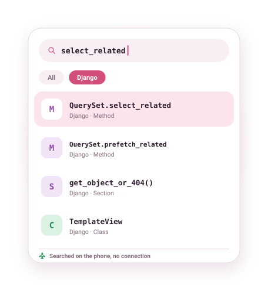

Django documentation, offline on Android
The full Django documentation, topics, reference, settings and management commands, on your phone in a 10 MB download. Look up select_related versus prefetch_related without a connection.

What is in the Django docset
The Django docset is the official documentation: tutorials, topic guides, the model and QuerySet reference, class-based views, every setting and every manage.py command. Settings and commands have their own entry types, so a search for makemigrations or ALLOWED_HOSTS goes straight to the right section.
At about 10 MB it is quick to download, and it pairs naturally with the Python docset.
- Version
- 6.1.2
- Entries
- 5,705
- Download
- 10.0 MB
- Source
- Official docset feed

Example entries you can search offline
A few real entries from the Django docset's index, as they appear in search results:
| Entry | Type |
|---|---|
| django.db.models.query.QuerySet.select_related | Method |
| django.db.models.query.QuerySet.prefetch_related | Method |
| django.db.models.Model.save | Method |
| F() expressions | Section |
| get_object_or_404() | Section |
| path() | Section |
| ModelForm | Section |
| TemplateView | Class |
| makemigrations | Command |
| DEFAULT_AUTO_FIELD | Setting |
How to get the Django documentation offline
- Install DevDocs from Google Play. It is free and needs no account.
- Open the Store tab and search for Django.
- Tap Download. The docset downloads in the background (10.0 MB compressed) and is indexed on your phone.
- Open Search or the docset in your Library. From now on it works with no connection.
Tips for searching the Django docs
- Method entries use full paths such as
django.db.models.query.QuerySet.filter; typing justQuerySet.filterfinds them. - Search a setting name in capitals (
DATABASES) to jump to its reference. - Django REST framework is available as a community-contributed docset in the same Store.
Related docsets
Also in the DevDocs Store: Python, Django REST framework, Flask, SQLAlchemy, Jinja, PostgreSQL. Install any of them and one search covers them all. See also: Python documentation offline.
Django docs offline: questions
Which Django version is it?
Is Django REST framework available too?
Do I need the Python docset as well?
More answers in the DevDocs FAQ.
Other documentation you can keep offline
- Python 16,146 entries
- Kotlin 12,301 entries
- Java 59,956 entries
- JavaScript 9,447 entries
- Android (Kotlin) 200,572 entries
- React 1,369 entries
Or browse all 806 docsets by category.
Get the Django docs on your phone
DevDocs is free, has no ads and needs no account.